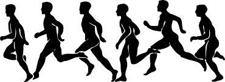

Открытый чемпионат Гродненской области по бегу на шоссе |
 |
Соревнования проводятся 02-03 октября 2015 года в г.Гродно (Советская площадь). Начало соревнований в 09.00.
Подтверждение об участии в соревнованиях и предварительные заявки принимаются до 01 октября 2015 года.
Регистрация участников 02 октября 2015 года с 14.00 до 17.00 в облспортуправлении (ул.Ожешко, 19), 03 октября 2015 года на месте старта (Советская площадь, ДК "Текстильщики" с 07.45 по 8.45).
В соревнованиях участвуют сборные команды городов и районов, спортивных школ, трудовых коллективов. Состав команд неограничен. В мандатную комиссию предоставляются документы: заявка в двух экземплярах, заверенная врачом, паспорт или заменяющий его документ.
| Категории участников | Дистанция |
| мужчины 1955 г.р. и ст. | 6 000 м. |
| мужчины 1965 - 1956 г.р. | 6 000 м. |
| мужчины 1975 - 1965 г.р. | 6 000 м. |
| мужчины 1997 - 1976 г.р. | 6 000 м. |
| юноши 1998 г.р. и моложе | 6 000 м. |
| женщины 1965 г.р. и ст. | 6 000 м. |
| женщины 1975 - 1966 г.р. | 6 000 м. |
| женщины 1997 - 1976 г.р. | 6 000 м. |
| девушки 1998 г.р. и моложе | 6 000 м. |
Управление спорта и туризма Гродненского облисполкома несет расходы по организации и проведению соревнований.
Проезд, размещение и питание участников, тренеров несут командирующие организации.
Команда занявшая 1 место - награждается кубком и грамотой, призёры командного первенства награждаются грамотами соответствующих степеней.
Чемпионы и призёры соревнований в абсолютном первенстве награждаются специальными призами (1м - 500 000 руб., 2м -450000 руб., 3м - 400 000 руб.), медалями и дипломами.
Победители областных соревнований в возрастных группах награждаются призами (300 000 руб.), медалями и дипломами, призёры - медалями и дипломами соответствующих степеней. Участники, ставшие призёрами в абсолютном первенстве, в возрастных группах не награждаются.